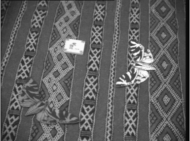
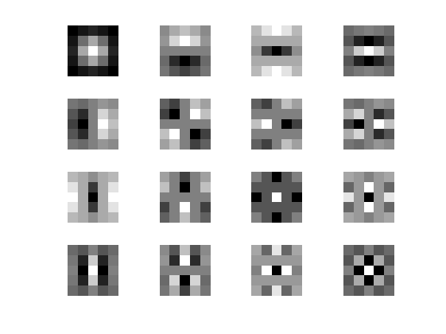
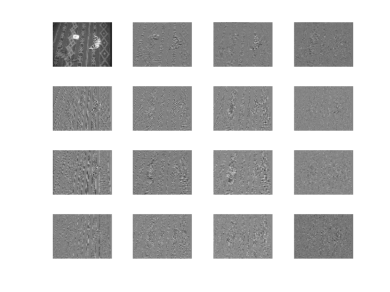
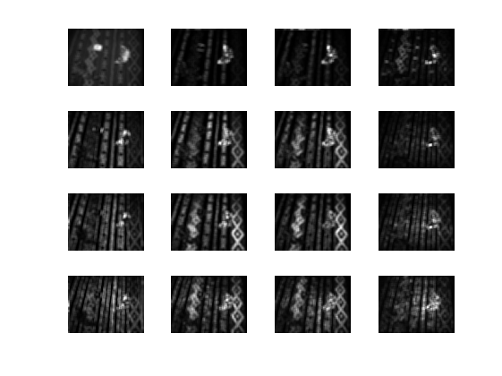
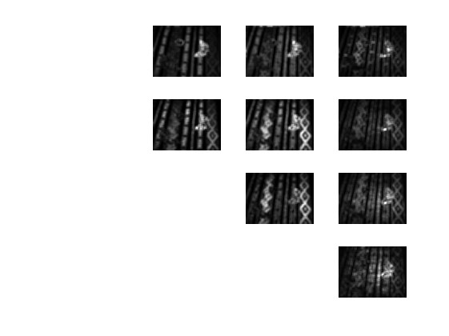
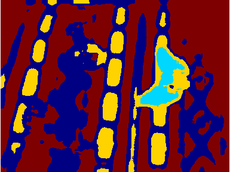

Image texture demonstration
David Young
A demonstration of image segmentation using Laws' texture masks
Contents
- Read an image and display it
- Make a cell array containing 5x5 Laws texture masks and display them
- Convolve the masks with the image
- Square to get energies and smooth
- Combine symmetrical components
- Convert cell array of energy matrices to set of vectors
- Use k-means clustering to group similar vectors together
- Experimenting
Read an image and display it
You will need to set your Matlab path suitably to run this demo.
It is sometimes suggested that a smoothed image is subtracted to make the image locally zero-mean. This step is omitted here - it makes little difference to the results.
%#ok<*NOPTS> im = teachimage('butterflies1.bmp'); figure; set(gcf, 'Name', 'Original image'); imshow(im);
Make a cell array containing 5x5 Laws texture masks and display them
Cell arrays can have matrices as their elements, not just numbers. They are accessed using curly brackets. See the help information for cell.
Here, the masks are built up from the primitive 1-D smoothing and differencing masks. A function to do this might just have the values built in.
Note that the 'full' convolution is needed to combine masks.
L2 = [1 1] % Simple smoothing mask E2 = [-1 1] % Simple differencing mask % length 3 combinations of these L3 = convolve2(L2, L2, 'full') S3 = convolve2(E2, E2, 'full') E3 = convolve2(L2, E2, 'full') % and now all the length 5 combinations L5 = convolve2(L3, L3, 'full') E5 = convolve2(L3, E3, 'full') S5 = convolve2(L3, S3, 'full') % same as E3 with E3 R5 = convolve2(S3, S3, 'full') W5 = convolve2(S3, E3, 'full') % Put them into cell array to allow the use of a loop for the 2-D step % Following some sources, we leave out W5 to reduce processing onedmasks = {L5 E5 S5 R5}; nmasks1 = length(onedmasks); nmasks2 = nmasks1^2; % Generate the 2-D masks from pairs of 1-D masks. We rotate one of the pair % to be vertical and convolve it with a horizontal mask. masks = cell(nmasks1, nmasks1); for i = 1:nmasks1 for j = 1:nmasks1 masks{i,j} = convolve2(rot90(onedmasks{i}), onedmasks{j}, 'full'); end end % Display the convolution masks. (The trick of using a single index with a % 2-D array shortens the code.) figure; set(gcf, 'Name', 'Laws masks'); for i = 1:nmasks2 subplot(nmasks1,nmasks1,i); imshow(masks{i}, []); end
L2 =
1 1
E2 =
-1 1
L3 =
1 2 1
S3 =
1 -2 1
E3 =
-1 0 1
L5 =
1 4 6 4 1
E5 =
-1 -2 0 2 1
S5 =
1 0 -2 0 1
R5 =
1 -4 6 -4 1
W5 =
-1 2 0 -2 1
 Convolve the masks with the image
We obtain one output array for each mask
convims = cell(nmasks1, nmasks1); for i = 1:nmasks2 convims{i} = convolve2(im, masks{i}, 'reflect'); end % Display the results of the convolutions figure; set(gcf, 'Name', 'Convolution results'); for i = 1:nmasks2 subplot(nmasks1,nmasks1,i); imshow(convims{i}, []); end
Square to get energies and smooth
This produces one texture energy image for each mask. The smoothing means that the energy for a given pixel is actually a local average over it and its neighbours.
smoothsize = 15; energyims = cell(nmasks1, nmasks1); mask = ones(smoothsize); for i = 1:nmasks2 energyims{i} = convolve2(convims{i}.^2, mask, 'reflect'); end % Display the texture energy images figure; set(gcf, 'Name', 'Texture energies'); for i = 1:nmasks2 subplot(nmasks1,nmasks1,i); imshow(energyims{i}, []); end
Combine symmetrical components
Masks come in symmetrical pairs, rotated by 90 degrees. Since we don't want to assume that the texture has a special orientation, we combine the outputs of these pairs by averaging to give rotationally invariant measures.
We also omit the output of the L5xL5 mask, since this responds to brightness rather than texture. Sometimes it is recommended to normalise by the output of this mask, but this only makes sense if the original image has been locally zero-meaned; we omit this step in this demonstration.
nenergies = (nmasks1*(nmasks1+1))/2-1; % final number of arrays tims = cell(1, nenergies); cindex = 0; for i = 1:nmasks1 for j = i:nmasks1 if i == j if i > 1 % masks on the diagonal are just copied cindex = cindex + 1; tims{cindex} = energyims{i,i}; end else % masks off the diagonal are combined cindex = cindex + 1; tims{cindex} = (energyims{i,j}+energyims{j,i})/2; end end end % Display the final combined texture energy images figure; set(gcf, 'Name', 'Combined texture energies'); pos = 1; for i = 1:nenergies pos = pos + 1 + (~(mod(pos,nmasks1))) * floor(pos/nmasks1); subplot(nmasks1,nmasks1,pos); imshow(tims{i}, []); end
Convert cell array of energy matrices to set of vectors
This is just rearranging the results so far to put all the values into one array for the classifier.
Each column of the final matrix contains the texture energies for a pixel of the original image.
v = zeros([size(im) nenergies]); % A 3-D array for i = 1:length(tims) v(:,:,i) = tims{i}; % Copy the separate energy matrices end v = (reshape(v, numel(im), nenergies))'; % Make it 2-D
Use k-means clustering to group similar vectors together
k-means finds clusters of similar vectors. The number of clusters has to be specified in advance. The result of the call to the k-means function is a vector that specifies which cluster each pixel belongs to.
% Carry out the clustering ntextures = 4; % the number of textures we want t = k_means(v, ntextures); t = reshape(t, size(im)); % Display the final results figure; set(gcf, 'Name', 'Texture classification'); imshow(t, []); colormap(jet);
Experimenting
You can download this document and then extract the original M-file with Matlab's grabcode function. You can then edit it for experimentation. (Functions from the Sussex vision library are only available to Sussex students and staff.)
Copyright University of Sussex, 2009.